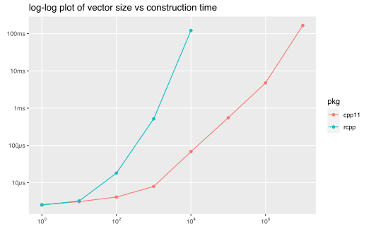

In many cases there is no need to convert a package from Rcpp. If the code is already written and you don’t have a very compelling need to use cpp11 I would recommend you continue to use Rcpp. However if you do feel like your project will benefit from using cpp11 this vignette will provide some guidance and doing the conversion.
It is also a place to highlight some of the largest differences between Rcpp and cpp11.
| Rcpp | cpp11 (read-only) | cpp11 (writable) | cpp11 header |
|---|---|---|---|
| NumericVector | doubles | writable::doubles | <cpp11/doubles.hpp> |
| IntegerVector | integers | writable::integers | <cpp11/integers.hpp> |
| CharacterVector | strings | writable::strings | <cpp11/strings.hpp> |
| RawVector | raws | writable::raws | <cpp11/raws.hpp> |
| List | list | writable::list | <cpp11/list.hpp> |
| RObject | sexp | <cpp11/sexp.hpp> | |
| XPtr | external_pointer | <cpp11/external_pointer.hpp> | |
| Environment | environment | <cpp11/environment.hpp> | |
| Function | function | <cpp11/function.hpp> | |
| Environment (namespace) | package | <cpp11/function.hpp> | |
| wrap | as_sexp | <cpp11/as.hpp> | |
| as | as_cpp | <cpp11/as.hpp> | |
| stop | stop | <cpp11/protect.hpp> |
The largest difference between cpp11 and Rcpp classes is that Rcpp classes modify their data in place, whereas cpp11 classes require copying the data to a writable class for modification.
The default classes, e.g. cpp11::doubles are read-only classes that do not permit modification. If you want to modify the data you need to use the classes in the cpp11::writable namespace, e.g. cpp11::writable::doubles.
In addition use the writable variants if you need to create a new R vector entirely in C++.
Rcpp also allows very flexible implicit conversions, e.g. if you pass a REALSXP to a function that takes a Rcpp::IntegerVector() it is implicitly converted to a INTSXP. These conversions are nice for usability, but require (implicit) duplication of the data, with the associated runtime costs.
cpp11 throws an error in these cases. If you want the implicit coercions you can add a call to as.integer() or as.double() as appropriate from R when you call the function.
Calling R functions from C++ is similar to using Rcpp.
One major difference in Rcpp and cpp11 is how vectors are grown. Rcpp vectors have a push_back() method, but unlike std::vector() no additional space is reserved when pushing. This makes calling push_back() repeatably very expensive, as the entire vector has to be copied each call.
In contrast cpp11 vectors grow efficiently, reserving extra space. Because of this you can do ~10,000,000 vector appends with cpp11 in approximately the same amount of time that Rcpp does 10,000, as this benchmark demonstrates.
library(cpp11test)
grid <- expand.grid(len = 10 ^ (0:7), pkg = "cpp11", stringsAsFactors = FALSE)
grid <- rbind(
grid,
expand.grid(len = 10 ^ (0:4), pkg = "rcpp", stringsAsFactors = FALSE)
)
b_grow <- bench::press(.grid = grid,
{
fun = match.fun(sprintf("%sgrow_", ifelse(pkg == "cpp11", "", paste0(pkg, "_"))))
bench::mark(
fun(len)
)
}
)[c("len", "pkg", "min", "mem_alloc", "n_itr", "n_gc")]
saveRDS(b_grow, "growth.Rds", version = 2)
| len | pkg | min | mem_alloc | n_itr | n_gc |
|---|---|---|---|---|---|
| 1e+00 | cpp11 | 3.3µs | 0B | 10000 | 0 |
| 1e+01 | cpp11 | 6.05µs | 0B | 9999 | 1 |
| 1e+02 | cpp11 | 8.49µs | 1.89KB | 10000 | 0 |
| 1e+03 | cpp11 | 14.18µs | 16.03KB | 9999 | 1 |
| 1e+04 | cpp11 | 63.77µs | 256.22KB | 3477 | 2 |
| 1e+05 | cpp11 | 443.32µs | 2MB | 404 | 5 |
| 1e+06 | cpp11 | 3.99ms | 16MB | 70 | 3 |
| 1e+07 | cpp11 | 105.51ms | 256MB | 1 | 5 |
| 1e+00 | rcpp | 2.64µs | 0B | 10000 | 0 |
| 1e+01 | rcpp | 3.13µs | 0B | 9999 | 1 |
| 1e+02 | rcpp | 13.87µs | 42.33KB | 9997 | 3 |
| 1e+03 | rcpp | 440.77µs | 3.86MB | 319 | 1 |
| 1e+04 | rcpp | 54.13ms | 381.96MB | 2 | 2 |
Rcpp unconditionally includes calls to GetRNGstate() and PutRNGstate() before each wrapped function. This ensures that if any C++ code calls the R API functions unif_rand(), norm_rand(), exp_rand() or R_unif_index() the random seed state is set accordingly. cpp11 does not do this, so you must include the calls to GetRNGstate() and PutRNGstate() yourself if you use any of those functions in your C++ code. See R-exts 6.3 - Random number generation for details on these functions.
One convenient way to do safely is to use a simple class:
LinkingTo
SystemRequirements
// [[Rcpp::export]] to [[cpp11::register]]
pkgbuild::clean_dll() pkgload::load_all()
devtools::test()
SEXP if needed.Rcpp.h includes a number of STL headers automatically, notably <string> and <vector>, however the cpp11 headers generally do not. If you have errors like
error: no type named ‘string’ in namespace ‘std’
You will need to include the appropriate STL header, in this case <string>.
cpp11 conflicts with macros declared by some R headers unless the macros R_NO_REMAP and STRICT_R_HEADERS are defined. If you inlcude cpp11/R.hpp before any R headers these macros will be defined appropriately, otherwise you may see errors like
R headers were included before cpp11 headers and at least one of R_NO_REMAP or STRICT_R_HEADERS was not defined.
Which indicate that you must either change your include order or add preprocessor definitions for R_NO_REMAP and STRICT_R_HEADERS. Note that transitive includes of R headers (for example, those included by Rcpp.h) can also introduce the conflicting macros.
If you use typedefs for cpp11 types or define custom types you will need to define them in a pkgname_types.hpp file so that cpp_register() can include it in the generated code.
cpp11::stop() and cpp11::warning() with std::string
cpp11::stop() and cpp11::warning() are thin wrappers around Rf_stop() and Rf_warning(). These are simple C functions with a printf() API, so do not understand C++ objects like std::string. Therefore you need to call obj.c_str() when passing character data to them.
If you are constructing a length 1 logical vector you may need to explicitly use a r_bool() object in the initializer list rather than TRUE, FALSE or NA_INTEGER. This issue only occurs with the clang compiler, not gcc. When constructing vectors with more than one element this is not an issue